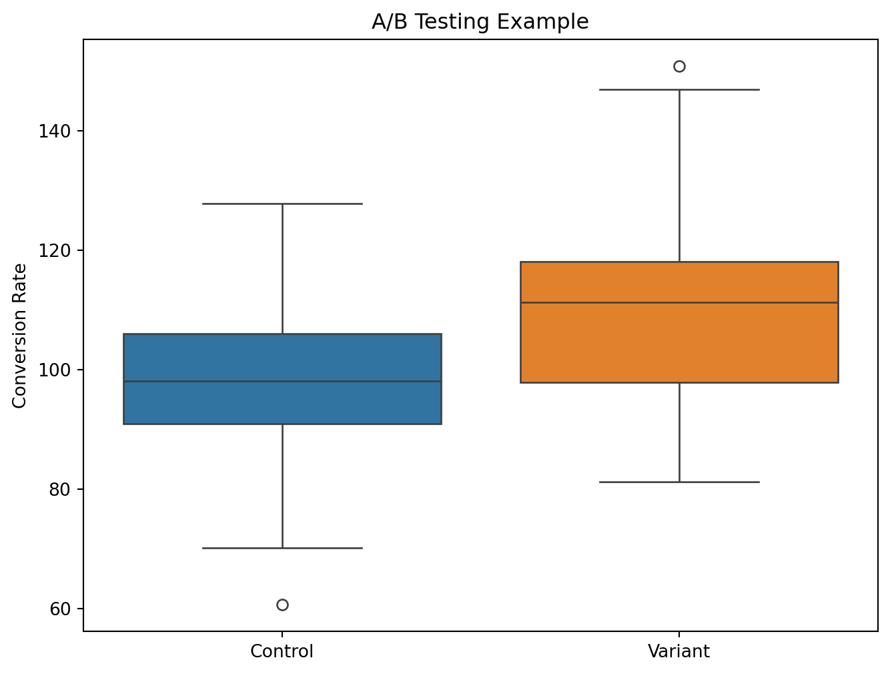

The Common Mistakes You’re Making With A/B Testing And How To Avoid Them
Marketing Analytics
Author
Fabian
Published
November 1, 2023
The Common Mistakes You’re Making With A/B Testing (And How To Avoid Them)
import matplotlib.pyplot as pltimport seaborn as snsimport numpy as npimport pandas as pd# Simulate A/B test datanp.random.seed(42)control_data = np.random.normal(loc=100, scale=15, size=100)variant_data = np.random.normal(loc=110, scale=15, size=100)# Create a box plot to compare the two variantsplt.figure(figsize=(8, 6))sns.boxplot(data=[control_data, variant_data])plt.xticks([0, 1], ['Control', 'Variant'])plt.ylabel('Conversion Rate')plt.title('A/B Testing Example')plt.show()

A/B testing is one of the most powerful tools in a marketer’s toolkit. By showing different variants of a page to different segments of users, you can directly measure the impact of changes and optimize for increased conversion. However, many marketers fall into common pitfalls when setting up and analyzing their A/B tests. In this post, we’ll go over some of the most frequent mistakes and provide tips on how to avoid them.
What is A/B Testing?
Let’s start with a quick refresher on what A/B testing entails. A/B testing, also known as split testing, is the process of showing two or more variants of a web page to different groups of visitors at the same time. For example, you may show the old page design (version A) to 50% of users and a new proposed design (version B) to the other 50%. By directing random samples of users to each variant and tracking engagement metrics like click-through rate and transactions, you can understand which version performs better. The old version is called the control, while the new version is the enabled variant.
Why Conduct A/B Testing?
Marketers run A/B tests for two primary reasons:
To measure the impact of changes or new features. For example, how does moving the call-to-action button on your landing page impact conversions?
To make low-risk modifications to optimize the customer experience. Changing some text copy or tweaking the page layout are easy ways to potentially lift metrics.
The most common goal with A/B testing is increasing conversion rates. But you can also use it to improve other user behavior metrics like time-on-page, bounce rates, etc.
Mistake #1: Relying Solely on P-Values
Now let’s get into some common mistakes people make when running A/B tests. The first is over-relying on p-values to determine the significance of results. P-values tell you the probability that the difference between variants is due to chance. At the commonly used threshold of 0.05, a p-value lower than that signifies your results are statistically significant (i.e. not random).
P-values are based on null hypothesis testing - they assume there is no difference between the variants. The p-value tells you the probability of seeing your results if the null hypothesis is true.
A p-value threshold of 0.05 is commonly used. This means there is a 5% chance of seeing the results if the variants actually perform the same.
Therefore, a p-value below 0.05 indicates the results are statistically significant - meaning the variants likely do perform differently.
However, p-values don’t tell you anything about the actual magnitude or importance of the effect. You may see a positive lift in conversions that is not statistically significant according to the p-value. But that doesn’t necessarily mean you should ignore the lift, especially if it’s practically meaningful for the business.
That’s why it’s important to also look at the effect size and uncertainty interval. Rather than just a binary yes/no of significance, these provide more nuance into the potential range of outcomes. You can then apply your business knowledge to determine if the effect is meaningful enough to act on.
Mistake #2: Not Evaluating Practical Significance
This ties into the second mistake - not evaluating practical significance. Just because a test result is statistically significant according to the p-value doesn’t mean it’s meaningful in a real-world business context. The lift in conversions could be negligible compared to your revenue goals. Or it could require engineering work that far outweighs the potential gains.
That’s why it’s crucial to supplement your statistical knowledge with business expertise. Look at the meaningful effects and minimum deltas that move the needle given your industry, business model, and goals. This domain knowledge helps put statistical significance into a practical perspective.
Relying solely on p-values misses critical perspective when analyzing A/B test impact.
Mistake #3: No Minimum Detectable Effect
Another error is failing to define a minimum detectable effect prior to testing. This is the smallest effect that would be meaningful enough to impact decisions. By calculating this ahead of time, you can better prioritize experiments and ensure they’ll be running long enough to potentially detect a meaningful effect.
The Minimum Detectable Effect (MDE) is the smallest effect size that a statistical test can detect with a given power and significance level. It is a useful measure for planning experiments and studies, as it can help to determine the sample size required to achieve a desired level of sensitivity.
Mistake #4: Focusing Solely on the Data
The final mistake is focusing solely on data rather than learning. While picking the winning variant is the end goal, you should also be using A/B tests as an opportunity to learn more about your customers and product.
Look beyond the singular metric of conversion rate. Set up tracking to uncover how user behavior differs between variants. How are people interacting with the new features you build? Where are they running into friction? Statistical significance tells you whether a change will increase conversions, but comprehensive analytics provide the richer behavioral data to actually understand why.
So in your test analysis, make sure to synthesize the qualitative user insights with the quantitative results. This understanding of both statistical and practical significance will unlock bigger learnings that can inform your customer strategy beyond just the test results.
Avoiding Common A/B Testing Pitfalls
A/B testing is a staple of modern marketing when done right. Avoid these common mistakes to ensure your tests are scientifically sound as well as meaningful for the business. Define minimum detectable effects, dig into the effect size beyond p-values, and supplement with behavioral analytics. Testing for insights rather than just chasing statistical significance will lead to higher ROI on your optimization efforts.
By avoiding common mistakes, marketers can get the most value out of their testing programs:
Look beyond p-values to understand the meaningful effect size and uncertainty intervals. Statistical significance isn’t everything.
Don’t rely solely on data. Supplement with qualitative insights through surveys, user interviews, and usability studies.
Calculate minimum detectable effect upfront to ensure appropriate statistical power and experiment duration.
Evaluate practical significance - whether results are meaningful given business context, not just statistically significant.
Feed learnings back into customer and product strategy. Testing shouldn’t just optimize metrics but also inform broader initiatives.
In summary, approach A/B testing with both scientific rigor and strategic context. Test for insights rather than chasing vanity metrics. Synthesize multiple data points for a holistic analysis. This balanced perspective will lead to more impactful optimization and value creation.